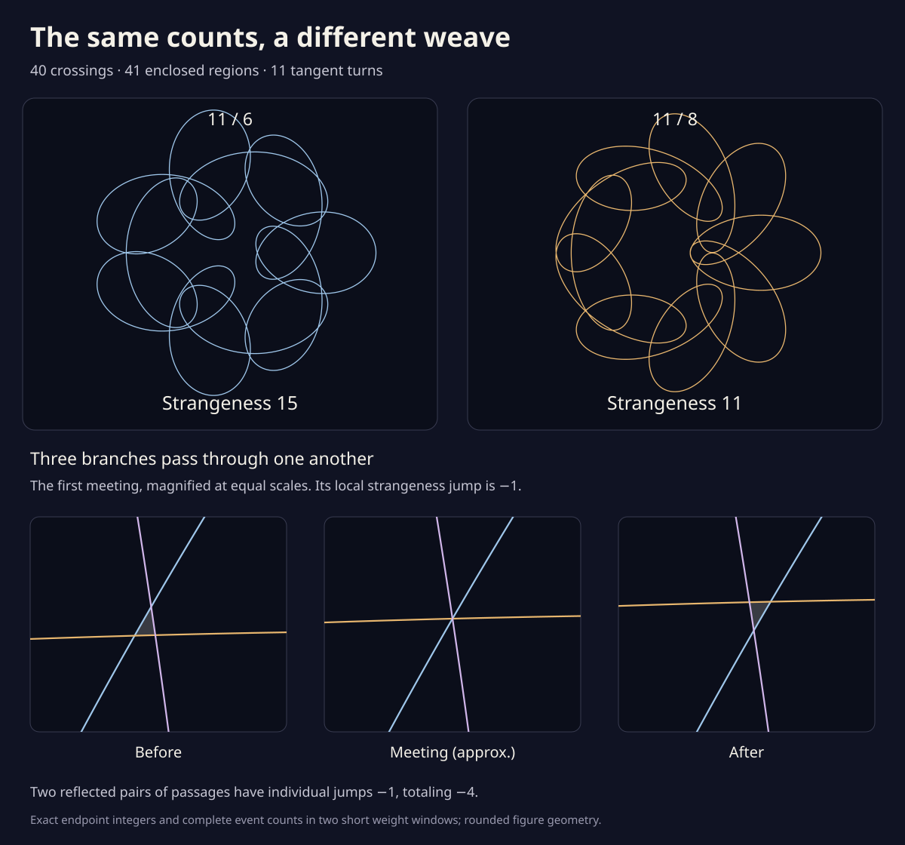

The same counts, a different weave
Forty crossings. Forty-one enclosed regions. Eleven turns of the direction of travel. These two drawings agree on all three counts, and even on how many regions have each winding number. Their crossing order carries a difference: strangeness is 15 in the first drawing and 11 in the second.
A little triangle switches sides
Blend the two backward arms, keeping the other motions fixed. The point keeps moving throughout the route. Near the beginning, three branches meet above the axis, with a reflected meeting below. It happens again a little later. Each of these four passages lowers strangeness by one.
The slider covers only a small neighborhood of the selected meeting. At its center, rounded coordinates approximate the exact event. Nothing animates.
Before the first passage above the axis. Three branches enclose a small triangle.

A count can miss how the lines are woven together. Strangeness remembers some of that order. It stays fixed at an ordinary two-branch touch, and changes by one at an ordinary triple passage.
Further along this same blend, pairs of crossings close or open a little lens. Their branches can travel together or face each other. Watch two ways to touch ↗.
Why does the point keep moving?
The arm turning eleven times has speed 140 × 11 = 1540. All the other speeds together are at most 245 + 65 × 8 = 765. Even when they oppose it, a speed of at least 1540 − 765 = 775 remains, in drawing units per radian.
The route is a straight blend: z(t,a) = 245 exp(it) + 140 exp(11it) + 65[(1−a) exp(−6it) + a exp(−8it)]. At a = 0 it is 11 / 6; at a = 1 it is 11 / 8. Its tangent index stays eleven throughout.
What do the event certificates cover?
Rational bounds cover every point of the orbit and every weight in two short windows: 0.0471–0.0472 and 0.0755–0.0756. Each window has exactly two reflected triple passages, forty pairwise crossings away from the events, and no other curve event. Fresh endpoint proofs give strangeness 15 → 13 and 13 → 11.
The pictures use rounded coordinates and a wider local slider neighborhood. These two event windows account for the four individual jumps. A later whole-route proof excludes any further triple passage and finds eight ordinary tangencies along the rest of the blend. Reproduce the two window proofs ↗ · Read the complete census ↗
The little triangle's area approaches zero quadratically on either side of a meeting. Follow its area law and certified coefficients ↗